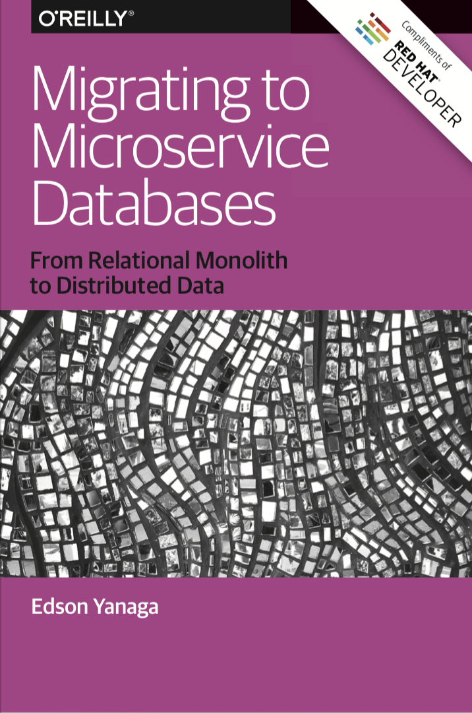

- Desarrollador desde mucho.
- Creé Kiakora Software después de varios años de autónomo.
- Mi primera vez con Groovy y Grails fue allá por 2010.
- Ahora ayudando a Tymit a reinventar las tarjetas de crédito.
Madrid GUG
Compartir dominios y servicios entre proyectos Grails parecía una buena idea
03/12/2019
Jesús Jiménez Ballano
Tymit is hiring!
- Backend
- Android/Kotlin
- iOS/Swift
I'm (almost) available!
Two years back...
API usada por las aplicaciones móviles
Panel de administración para la gestión interna
¡Tengo una idea!
Juntemos los servicios y los dominios en un plugin y usémoslo en ambas aplicaciones
Two years later...
Voy a presentar una charla en el Madrid GUG sobre esa decisión tomada hace 2 años
Problemas
Disclaimer
Algunos de los problemas vienen por compartir base de datos y no simplemente por compartir dominios y servicios
Otros problemas vienen por tener más de un nodo levantado de los proyectos
¿Dónde lo coloco?
Hay servicios o dominios que sabes que sólo uno de tus proyectos lo va a usar.
- Plugin: Añadimos un montón de código que no se va a usar en los proyectos principales.
- Proyecto: Tenemos servicios y dominios desperdigados.
Ejemplo: Dominios Usuario
Cada aplicación tiene su dominio Usuario para el login.
Los servicios utilizarán ambos objetos.
Dependencias no usadas
Cualquier dependencia del plugin irá en el proyecto principal, la use o no
- WAR/JAR más grandes
- Mayor uso de memoria
- Mayor tiempo de arranque
GORM Multi-tenancy
Se dificulta bastante el trabajo con multi-tenancy ya que el API lo usará, pero al panel de administración no.
Lo acabamos quitando
Variables de entorno
Tener dependencias comunes nos obliga a añadirle a un proyecto variables de entorno que no necesita
Actualizaciones de versiones de Grails
Actualizas todos o ninguno (major versions principalmente)
Caches
- Hibernate
- @Cache
Posible solución: caches distribuidas
Database (migration plugin)
Mismos dominios lleva normalmente a atacar a la misma base de datos
Si tienes más de 1 nodo por proyecto, mismo problema
Versionado
grails.gorm.default.mapping = {
version false
}
Bloqueos en tiempo de arranque
Mayor tiempo de arranque
Cambios de esquema en un proyecto bloquea al resto
Cambios en el esquema
Errores si elimino un campo de la base de datos
Errores si añado un campo no nullable
Orden al levantar los proyectos
El más importante tendrá que levantar primero
A infraestructura no suele gustarle ordenar los arranques
¿Dónde pongo los scripts de actualización?
- Plugin
- Cualquier proyecto que levante cambia el esquema y puede romper a los otros
- Proyectos
- El otro proyecto puede fallar
- Los tests funcionales/integración en el proyecto que no tiene los scripts se complican
- Difícil hacer tests de integración fiables
Bloqueos de tablas
Cuidado con vistas materializadas actualizándose
Los bloqueos de tablas pueden afectar a otras partes críticas de la aplicación
(Posibles) Soluciones
Algunas compatibles entre sí, otras soluciones alternativas
Disclaimer
No todas las soluciones las he probado
Parte el plugin en trozos
Con trozos más pequeños cada proyecto puede incorporar lo que necesite
Comparte solo lo que realmente es común
Cada aplicación consume los datos a su manera
Poco código es realmente compartido
No compartas base de datos
Si no se comparten bases de datos, evitaremos muchos de los proyectos
A cambio añadimos el problema de la sincronización de los datos
No uses las mismas tablas
Crea vistas [materializadas] para generar los dominios específicos para cada proyecto
Sólo un proyecto escribe en una tabla determinada, el otro la consulta a partir de vistas
Comparte lo menos que puedas de cada tabla
Los dominios en cada proyecto pueden sólo usar los campos que necesitan
Cuidado con los campos nullable:false. Hay que usarlos lo menos posible en base de datos
No borrar campos de las tablas, simplemente dejar de usarlos
Cuidado con los renombres de campos. Cambia sólo el dominio y no el campo en la base de datos si es posible
Externaliza la gestión de la base de datos a otro proceso
Ningún proyecto gestiona la base de datos, sino que es un agente externo
Se puede planificar mejor el cambio en los esquemas para no romper

Microservicios (con responsabilidad)
Cada microservicio gestiona sus caches, bases de datos, etc
Event sourcing / CQRS
¡Y se acabó el compartir nada!
A cambio, mucha mayor complejidad
¿Preguntas o comentarios?